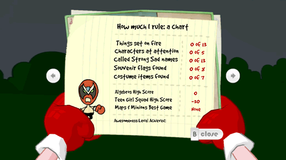

8 |
Interface affichée à l'écran |
 |
Durant le jeu, vous avez accès à :
 L'inventaire de Strong Bad montre ce que Strong Bad porte. Pour utiliser un article de l'inventaire, sélectionnez-le en le visant et appuyez sur
 La carte indique les endroits que vous pouvez visiter. De nouveaux endroits sont débloqués pendant le jeu, vérifiez-les donc souvent ! Afin de vous rendre à un nouvel endroit, pointez sur l'endroit débloqué et appuyez sur 
Visez les flèches situées à gauche et à droite de la carte pour feuilleter les autres pages. Vous y verrez une courbe qui évalue le niveau de grandiosité de Strong Bad (d'après vos succès au fil de la partie) et une liste d'objets à ramasser éparpillées dans le monde entier. Ces articles ne sont pas nécessaires pour finir la partie, mais ils peuvent la rendre plus amusante, donc gardez un oeil sur ces pages pour vous assurer de faire tout ce que vous pouvez faire ! Pour retourner à la partie, visez Close sous la carte et appuyez sur
 Le mode Photo vous permet de prendre des photos à quasiment n'importe quel moment du jeu. En mode photo, vous pouvez utiliser les fonctions suivantes:
Vous pouvez partager ces photos avec vos amis Wii en utilisant l'ordinateur portable de Strong Bad. |


 |
 |
 |